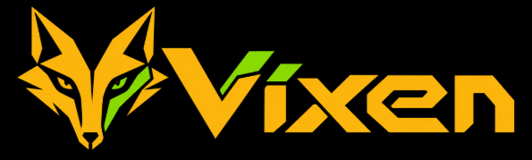

The established Vixen fox replaces the Scope aperture. Not installed or published.

Native vector source: vixen_mark.xml. Android 13 themed icon and a separate white notification silhouette are included. Package identity, evidence and AI behavior are unchanged. Review at small size before approval.